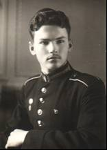
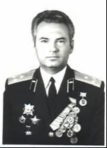
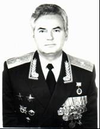
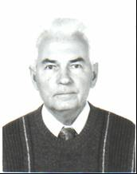

СВЕДЕНИЯ ОБ АВТОРЕ
Дудник Владимир Михайлович родился 28 января 1933 года.
В 1950 году окончил Сталинградское суворовское училище, а в 1952 году -
Ленинградское пехотное училище им. С.М.Кирова.
В 1964 году окончил Военно-политическую академию им. В.И.Ленина.
Член редколлегии академической газеты «Ленинец» (1961-1964 гг.)
1952 – 1991 г.г. на партийной-политической работе в Советской Армии.
С 25 сентября 1975 года – кандидат педагогических наук. Диссертацию
защищал, будучи в войсках.
С октября 1977 года - генерал-майор.
С 1979 года проходил службу в органах стратегического руководства
Вооруженных Сил на уровне военного округа.
С сентября 1984 года по сентябрь 1987 года -- зам.начальника
политуправления Ставки войск Западного направления ( командующий Маршал
Советского Союза Н.В.Огарков, Член Военного Совета – Начальник
политического управления генерал-полковник Б.П.Уткин ).
Последняя армейская должность – начальник кафедры партийно-политической
работы и партийного строительства в Военно-политической академии им.
В.И.Ленина (сентябрь 1987- март 1991 гг.).
С 1 декабря 1989 года – доцент по кафедре партийно-политической работы в
Советских ВС.
С февраля 1998 года – профессор Академии военных наук.
Начиная с 1955 г. постоянно печатался в различных периодических изданиях.
Соавтор книги «Легендарный рядовой» (Таллин,1958 г.) об Александре
Матросове.
С 1956 г. – член КПСС, из партии не выходил; член союза журналистов с 1962
года.
В период перестройки негласно сотрудничал с газетами «Известия» и
«Московские новости». С 1991 г. военный консультант, а в 1992-1994 гг.
военный обозреватель газеты «Московские новости».
Участвовал в создании и был членом высших руководящих органов партии
экономической свободы (ПЭС), партии свободного труда (ПСТ), был членом
политсовета Партии народного самоуправления (партии С.Федорова).
Инициировал создание Демократического Выбора России (ДВР), но участия в
работе не принимал и членом не был.
Длительное время состоял в руководящих органах Демократической России
(ДР).
С марта 1991 г. – член координационного совета движения «Военные за
демократию».
С середины 1992 года сосредоточился на общественно-интеллектуальной
деятельности:
- избирался председателем общественного совета «Круглый стол «Армия и
общество»;
- военный эксперт ассоциации «Гражданский мир».
В первой половине 1995 года активную партийную работу прекратил и из
партий и движений времен перестройки вышел, сосредоточившись на
военно-интеллектуальной работе. В 2002 году совместно с доктором
философских наук и бывшим своим соучеником по академии, а ныне
генерал-майором в отставке, вице-президентом Академии военных наук Ю.Я.
Киршиным, выступил создателем РОО «Генералы и адмиралы за гуманизм и
демократию»,став его вице-президентом.
Автор многочисленных трудов и статей по вопросам перестройки и реформы
Армии.
По этим вопросам выступал по радио и на телевидении в стране и за рубежом,
печатался в журналах «Огонек», «Новое время», «Человек и закон»,
«Международная жизнь» и в других российских и зарубежных средствах
массовой информации.
Женат, две дочери и четверо внуков.
Автор в разные годы своей творческой жизни




1950 год 1969 год1980 год 2002 год
Boeing Employees
Good Neighbor
Fund
Этот знак символизирует 40-летнюю традицию милосердия
работников Боинга.
Компания Боинг считает за честь преподнести Вам этот знак в
память о московском симпозиуме «Социальная защита населения
в
условиях перехода к рыночной экономике» (декабрь 1991 г.).
Общенациональная сеть «Юнайтед вей» приносят Вам в дар этот
памятный знак и благодарят Вас за приглашение присоединиться
к дискуссии на симпозиуме о социальной защите народов наших
стран.
Лео Десклос - Служба помощи престарелым
Мэрилин Ла Сель - Служба психического здоровья
Питер Шнурман - Служба продовольственной помощи
Джен Кнутсон - «Юнайтед Вей»
|

Этим знаком я награждён в 1991 году за организацию участия
представителей Российской Армии в этой акции. |